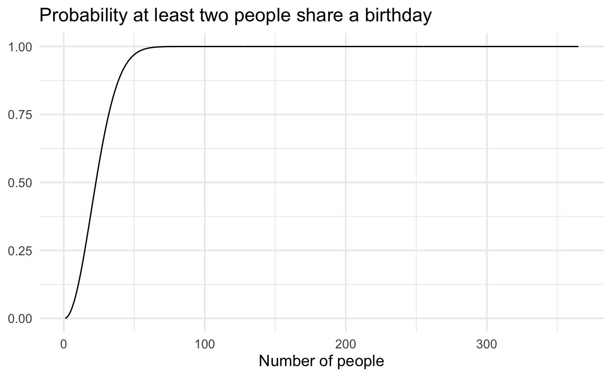

Lecture 7 Sample space and probability
Learning objectives
- Review set notation and operations
- Define probabilistic models
- Describe conditional probability
- Define total probability theorem
- Implement Bayes’ Rule
- Define and evaluate independence of events
- Identify the importance of counting possible events
Supplemental readings
- Chapter 1, Bertsekas and Tsitsiklis (2008)
- Equivalent reading from Bertsekas and Tsitsiklis lecture notes
7.1 Model of probability
- Sample space - set of all things that could happen
- Events - subsets of the sample space
- Probability - chance of an event
7.2 Sample space
The sample space is the set of all things that can occur. We will collect all distinct outcomes into the set \(\Omega\).
Example 7.1 (Congressional elections) Members of the U.S. House of Representatives are elected every 2 years. If we consider the outcomes for an incumbent running for reelection, there are two possible outcomes: Win (\(W\)) or Not win (\(N\)) (i.e. lose)
- One incumbent: \(\Omega = \{W, N\}\)
- Two incumbents: \(\Omega = \{(W,W), (W,N), (N,W), (N,N)\}\)
- 435 incumbents: \(\Omega = 2^{435}\) possible outcomes (permutations)
Example 7.2 (Number of countries signing treaties) \[\Omega = \{0, 1, 2, \ldots, 194\}\]
Example 7.3 (Duration of parliamentary governments) In a parliamentary democracy, the government is defined as the ruling political part in parliament. It remains in power until the government collapses under a vote of no confidence.17
- All non-negative real numbers: \([0, \infty)\)
- \(\Omega = \{x : 0 \leq x < \infty\}\)
- All possible \(x\) such that \(x\) is between 0 and infinity
7.3 Events
Events are a subset of the sample space:
\[E \subset \Omega\]Example 7.4 (Congressional elections) Consider one incumbent. Possible events are
\[ \begin{aligned} E &= W \\ F &= N \end{aligned} \]
Now consider two incumbents. Possible events include
\[ \begin{aligned} E &= \{(W, N), (W, W) \} \\ F &= \{(N, N)\} \end{aligned} \] Now consider all 435 incumbents running for election. There are an extraordinarily large possible events that could occur. Consider just two possible examples:
- Outcome of 2016 election - one event
- All outcomes where Dems retake control of the House - one event
Notation: \(x\) is an element of a set \(E\)
\[ \begin{aligned} x &\in E \\ \{N, N\} &\in E \end{aligned} \]
7.3.1 Event operations
\(E\) is a set, or a collection of distinct objects. We can perform operations on sets to create new sets. Consider two example sets:
\[ \begin{aligned} E &= \{ (W,W), (W,N) \} \\ F &= \{ (N, N), (W,N) \} \\ \Omega &= \{(W,W), (W,N), (N,W), (N,N) \} \end{aligned} \]
Operations determine what lies in the new set \(E^{\text{new}}\).
- Union: \(\cup\)
- All objects that appear in either set (OR)
- \(E^{\text{new}} = E \cup F = \{(W,W), (W,N), (N,N) \}\)
- Intersection: \(\cap\)
- All objects that appear in both sets (AND)
- \(E^{\text{new}} = E \cap F = \{(W,N)\}\)
- Complement of set \(E\): \(E^{c}\)
- All objects in \(S\) that are not in \(E\)
- \(E^{c} = \{(N, W) , (N, N) \}\)
- \(F^{c} = \{(N, W) , (W, W) \}\)
What is \(\Omega^{c}\)? - an empty set \(\emptyset\). Suppose \(E = {W}\), \(F = {N}\). Then \(E \cap F = \emptyset\) (there is nothing that lies in both sets).
Definition 7.1 (Mutually exclusive) Suppose \(E\) and \(F\) are events. If \(E \cap F = \emptyset\) then we’ll say \(E\) and \(F\) are mutually exclusive.
- Mutual exclusivity \(\neq\) independence
- \(E\) and \(E^{c}\) are mutually exclusive events
Example 7.5 Consider the act of flipping a coin where it can land on either
\[ \begin{aligned} H &= \text{heads} \\ T &= \text{tails} \end{aligned} \]
Suppose \(S = \{H, T\}\). Then \(E = H\) and \(F = T\), then \(E \cap F = \emptyset\)
Example 7.6 Suppose
\[ \begin{aligned} S &= \{(H, H), (H,T), (T, H), (T,T) \} \\ E &= \{(H,H)\} \\ F &= \{(H, H), (T,H)\} \\ G &= \{(H, T), (T, T) \} \end{aligned} \]
- \(E \cap F = (H, H)\)
- \(E \cap G = \emptyset\)
- \(F \cap G = \emptyset\)
Example 7.7 Suppose
\[ \begin{aligned} S &= \Re_{+} \quad \text{(A real positive number)} \\ E &= \{x: x> 10\} \\ F &= \{x: x < 5\} \end{aligned} \]
Then \(E \cap F = \emptyset\).
Definition 7.2 Suppose we have events \(E_{1}, E_{2}, \ldots, E_{N}\).
\[\cup_{i=1}^{N} E_{i} = E_{1} \cup E_{2} \cup E_{3} \cup \ldots \cup E_{N}\]
- \(\cup_{i=1}^{N} E_{i}\) is the set of outcomes that occur at least once in \(E_{1} , \ldots, E_{N}\).
\[\cap_{i=1}^{N} E_{i} = E_{1} \cap E_{2} \cap \ldots \cap E_{N}\]
- \(\cap_{i=1}^{N} E_{i}\) is the set of outcomes that occur in each \(E_{i}\).
7.4 Probability
Probability is the chance of an event occurring. \(\Pr\) is a function, and the domain contains all events \(E\).
7.4.1 Three axioms
All probability functions \(\Pr\) satisfy three axioms:
Nonnegativity: For all events \(E\), \(0 \leq \Pr(E) \leq 1\)
Normalization: \(\Pr(S) = 1\)
Additivity: For all sequences of mutually exclusive events \(E_{1}, E_{2}, \ldots,E_{N}\) (where \(N\) can go to infinity):
\[\Pr\left(\cup_{i=1}^{N} E_{i} \right) = \sum_{i=1}^{N} \Pr(E_{i} )\]
- Any countable sequence of mutually exclusive events can be added together to generate the probability of any of the mutually exclusive events occurring
7.4.2 Basic examples
Example 7.8 (Coin flipping) Suppose we are flipping a fair coin. Then \(\Pr(H) = \Pr(T) = 1/2\).
Suppose we are rolling a six-sided die. Then \(\Pr(1) = 1/6\).
Suppose we are flipping a pair of fair coins. Then \(\Pr(H, H) = 1/4\).
Example 7.9 (Congressional incumbents) One candidate example:
- \(\Pr(W)\): probability incumbent wins
- \(\Pr(N)\): probability incumbent loses (does not win)
Two candidate example:
- \(\Pr(\{W,W\})\): probability both incumbents win
- \(\Pr( \{W,W\}, \{W, N\} )\): probability incumbent \(1\) wins
Full House example:
- \(\Pr( \{ \text{All Democrats Win}\} )\)
We’ll use data to infer these things.
7.4.2.1 Rolling the dice
Consider the experiment of rolling a pair of 4-sided dice. We assume the dice are fair, and we interpret this assumption to mean that each of the sixteen possible outcomes [pairs \((i,j)\) with \(i,j = 1,2,3,4\)] has the same probability of \(1/16\). To calculate the probablity of an event, we must count the number of elements of the event and divide by 16 (the total number of possible outcomes). Here are some event probabilities calculated this way:
\[ \begin{aligned} \Omega &= \{(1,1), (1,2), (1,3), (1,4), (2,1), (2,2), (2,3), (2,4), \\ &\quad (3,1), (3,2), (3,3), (3,4), (4,1), (4,2), (4,3), (4,4) \} \end{aligned} \]
\[ \begin{aligned} \Pr (\text{the sum of the rolls is even}) &= 8/16 = 1/2 \\ \Pr (\text{the sum of the rolls is odd}) &= 8/16 = 1/2 \\ \Pr (\text{the first roll is equal to the second}) &= 4/16 = 1/4 \\ \Pr (\text{the first roll is larger than the second}) &= 6/16 = 3/8 \\ \Pr (\text{at least one roll is equal to 4}) &= 7/16 \end{aligned} \]
7.4.3 Surprising probability facts
Formalized probabilistic reasoning helps us to avoid silly reasoning.
- “What are the odds this could have happened?!?!?” - perhaps they are not great, but neither are all the other non-patterns that are missed.
- “There is no way a candidate has a 80% chance of winning, the forecasted vote share is only 55%” - this confuses different events. Chance of winning \(\neq\) vote share.
- “Group A has a higher rate of some behavior, therefore most of the behavior is from group A” - confuses two different problems (see Simpson’s Paradox).
- “This is a low probability event, therefore God designed it”
- Even if we stipulate to a low probability event, intelligent design is an assumption
- Low probability obviously doesn’t imply divine intervention. Take 100 balls and let them sort into 2 bins. You’ll get a result, but the probability of that result \(= 1/(10^{29} \times \text{Number of Atoms in Universe})\). That is, there are a vast number of possible combinations of the 100 balls such that any one specific combination is highly unlikely.
7.4.3.1 Birthday problem
Suppose we have a room full of \(N\) people. What is the probability at least 2 people have the same birthday?
Assuming leap year counts, \(N = 367\) guarantees at least two people with same birthday. For \(N< 367?\)?

Actually not that low of a probability. We only need 23 people to have at least a \(.5\) probability of two individuals possessing the same birthday.
7.4.3.2 E-Harmony problem
Also known as the curse of dimensionality and online dating.
Suppose (for example) 29 dimensions are binary (0,1) and independent.
\[\Pr(\text{2 people agree}) = 0.5\]
\[ \begin{aligned} \Pr\text{(Exact)} &= \Pr\text{(Agree)}_{1} \times \Pr\text{(Agree)}_{2}\times \ldots \times \Pr\text{(Agree)}_{29} \\ &= 0.5 \times 0.5 \times \ldots \times 0.5 \\ &= 0.5^{29} \\ &\approx 1.8 \times 10^{-9} \end{aligned} \]
The probability of an exact match across all 29 dimensions is 1 in 536,870,912. Across many “variables” (events) agreement is harder. Many approaches therefore approximate or match on a handful of dimensions. For instance, \(k\)-nearest neighbors is a machine learning algorithm that relaxes the requirement for agreement across all variables and instead looks for observations which are closest on as many dimensions as possible.
7.5 Conditional probability
Social scientists almost always examine conditional relationships
- Given low-interest rates, what is the probability of high inflation?
- Given “economic anxiety”, what is the probability of voting for Donald Trump?
- Given opposite political party identification, what is the probability of obtaining a date on Tinder?
Our intuition is that some event has occurred: an outcome was realized. With our knowledge that this outcome has already happened, what is the probability that something in another set happens?
Definition 7.3 (Conditional probability) Suppose we have two events, \(E\) and \(F\), and that \(\Pr(F)>0\). Then,
\[\Pr(E|F) = \frac{\Pr(E\cap F ) } {\Pr(F) }\]
- \(\Pr(E \cap F)\): Both \(E\) and \(F\) must occur
- \(\Pr(F)\) normalize: we know \(\Pr(F)\) already occurred
7.5.1 Examples
Example 7.10 Suppose
- \(F = \{\text{All Democrats Win} \}\)
- \(E = \{\text{Nancy Pelosi Wins (D-CA)} \}\)
- If \(F\) occurs then \(E\) most occur, \(\Pr(E|F) = 1\)
Example 7.11 Suppose
- \(F = \{\text{All Democrats Win} \}\)
- \(E = \{ \text{Louie Gohmert Wins (R-TX)} \}\)
- \(F \cap E = \emptyset \Rightarrow \Pr(E|F) = \frac{\Pr(F \cap E) }{\Pr(F)} = \frac{\Pr(\emptyset)}{\Pr(F)} = 0\)
Example 7.12 (Incumbency advantage) Suppose
- \(I = \{ \text{Candidate is an incumbent} \}\)
- \(D = \{ \text{Candidate Defeated} \}\)
- \(\Pr(D|I) = \frac{\Pr(D \cap I)}{\Pr(I) }\)
The probability that a candidate is defeated given that the candidate is an incumbent is equal to the probability of being defeated AND being an incumbent divided by the probability of being an incumbent
7.5.2 Difference between \(\Pr(A|B)\) and \(\Pr(B|A)\)
\[ \begin{aligned} \Pr(A|B) & = \frac{\Pr(A\cap B)}{\Pr(B)} \\ \Pr(B|A) & = \frac{\Pr(A \cap B) } {\Pr(A)} \end{aligned} \]
These are not the same values. Consider a Less Serious Example \(\leadsto\) type of person who attends football games:
Figure 7.1: This football.
Figure 7.2: Or that football.
\[ \begin{aligned} \Pr(\text{Attending a football game}| \text{Drunk}) & = 0.01 \\ \Pr(\text{Drunk}| \text{Attending a football game}) & \approx 1 \end{aligned} \]
7.6 Law of total probability
Suppose that we have a set of events \(F_{1}, F_{2}, \ldots, F_{N}\) such that the events are mutually exclusive and together comprise the entire sample space \(\cup_{i=1}^{N} F_{i} = \Omega\). Then, for any event \(E\)
\[\Pr(E) = \sum_{i=1}^{N} \Pr(E | F_{i} ) \times \Pr(F_{i})\]
Example 7.13 (Voter mobilization) Infer \(\Pr(\text{vote})\) after mobilization campaign.
- \(\Pr(\text{vote}|\text{mobilized} ) = 0.75\)
- \(\Pr(\text{vote}| \text{not mobilized} ) = 0.25\)
- \(\Pr(\text{mobilized}) = 0.6 ; \Pr(\text{not mobilized} ) = 0.4\)
What is \(\Pr(\text{vote})\)?
- Sample space (one person) = \(\{\) (mobilized, vote), (mobilized, not vote), (not mobilized, vote) , (not mobilized, not vote) \(\}\)
Mobilization partitions the space (mutually exclusive and exhaustive), so we can use the law of total probability:
\[ \begin{aligned} \Pr(\text{vote} ) & = \Pr(\text{vote}| \text{mob.} ) \times \Pr(\text{mob.} ) + \Pr(\text{vote} | \text{not mob} ) \times \Pr(\text{not mob}) \\ & = 0.75 \times 0.6 + 0.25 \times 0.4 \\ & = 0.55 \end{aligned} \]
Example 7.14 (Chess tournament) You enter a chess tournament where your probability of winning a game is \(0.3\) against half the players (type 1), \(0.4\) against a quarter of the players (type 2), and \(0.5\) against the remaining quarter of the players (type 3). You play a game against a randomly chosen opponent. What is the probability of winning?
Let \(A_i\) be the event of playing with an opponent of type \(i\). We have
\[\Pr (A_1) = 0.5, \quad \Pr (A_2) = 0.25, \quad \Pr (A_3) = 0.25\]
Also, let \(B\) be the event of winning. We have
\[\Pr (B | A_1) = 0.3, \quad \Pr (B | A_2) = 0.4, \quad \Pr (B | A_3) = 0.5\]
Thus, by the total probability theorem, the probability of winning is
\[ \begin{aligned} \Pr (B) &= \Pr (A_1) \Pr (B | A_1) + \Pr (A_2) \Pr (B | A_2) + \Pr (A_3) \Pr (B | A_3) \\ &= 0.5 \times 0.3 + 0.25 \times 0.4 + 0.25 \times 0.5 \\ &= 0.375 \end{aligned} \]
7.7 Bayes’ Rule
](https://imgs.xkcd.com/comics/modified_bayes_theorem.png)
Figure 7.3: Modified Bayes’ Theorem
\(\Pr(B|A)\) may be easy to obtain, whereas \(\Pr(A|B)\) may be harder to determine. Bayes’ rule provides a method to move from \(\Pr(B|A)\) to \(\Pr(A|B)\)
Definition 7.4 (Bayes' Rule) For two events \(A\) and \(B\),
\[\Pr(A|B) = \frac{\Pr(A)\times \Pr(B|A)}{\Pr(B)} \]
The proof is:
\[ \begin{aligned} \Pr(A|B) & = \frac{\Pr(A \cap B) }{\Pr(B) } \\ & = \frac{\Pr(B|A)\Pr(A) } {\Pr(B) } \end{aligned} \]
- Conditional probability allows us to replace the joint probability of \(A\) and \(B\) with the alternative expression
Example 7.15 (Chess tournament redux) Let \(A_i\) be the event of playing with an opponent of type \(i\). We have
\[\Pr (A_1) = 0.5, \quad \Pr (A_2) = 0.25, \quad \Pr (A_3) = 0.25\]
Also, let \(B\) be the event of winning. We have
\[\Pr (B | A_1) = 0.3, \quad \Pr (B | A_2) = 0.4, \quad \Pr (B | A_3) = 0.5\]
Suppose that you win. What is the probability \(\Pr (A_1 | B)\) that you had an opponent of type 1?
Using Bayes’ rule, we have
\[ \begin{aligned} \Pr (A_1 | B) &= \frac{\Pr (A_1) \Pr (B | A_1)}{\Pr (A_1) \Pr (B | A_1) + \Pr (A_2) \Pr (B | A_2) + \Pr (A_3) \Pr (B | A_3)} \\ &= \frac{0.5 \times 0.3}{0.5 \times 0.3 + 0.25 \times 0.4 + 0.25 \times 0.5} \\ &= \frac{0.15}{0.375} \\ &= 0.4 \end{aligned} \]
Example 7.16 (Identifying racial groups by name) How do we identify racial groups from lists of names? The Census Bureau collects information on distribution of names by race. For example, Washington is the “blackest” name in America.
- \(\Pr (\text{black}) = 0.126\)
- \(\Pr (\text{not black}) = 1 - \Pr (\text{black}) = 0.874\)
- \(\Pr (\text{Washington} | \text{black}) = 0.00378\)
- \(\Pr (\text{Washington} | \text{not black}) = 0.000060615\)
- What is the probability of being black conditional on having the name “Washington”?
Using Bayes’ rule, we have
\[ \begin{aligned} \Pr(\text{black}|\text{Wash} ) & = \frac{\Pr(\text{black}) \Pr(\text{Wash}| \text{black}) }{\Pr(\text{Wash} ) } \\ & = \frac{\Pr(\text{black}) \Pr(\text{Wash}| \text{black}) }{\Pr(\text{black})\Pr(\text{Wash}|\text{black}) + \Pr(\text{nb})\Pr(\text{Wash}| \text{nb}) } \\ & = \frac{0.126 \times 0.00378}{0.126\times 0.00378 + 0.874 \times 0.000060616} \\ & \approx 0.9 \end{aligned} \]
Example 7.17 (Let's Make a Deal (aka the Monty Hall problem))Suppose you’re on a game show, and you’re given the choice of three doors: Behind one door is a car; behind the others, goats. You pick a door, say No. 1, and the host, who knows what’s behind the doors, opens another door, say No. 3, which has a goat. He then says to you, “Do you want to pick door No. 2?” Is it to your advantage to switch your choice?
Suppose we have three doors:
- \(A\) - event where the first door contains the car
- \(B\) - event where the second door contains the car
- \(C\) - event where the third door contains the car
The contestant guesses the first door. \(\Pr(A) = 1/3 \leadsto\) a chance of winning without switch. If the third door is revealed to not have a car:
\[ \begin{aligned} \Pr(B| \text{door 3 revealed} ) & = \frac{\Pr(B)\Pr(\text{door 3 revealed} | B)}{\Pr(B)\Pr(\text{door 3 revealed} | B) + \Pr(A) \Pr(\text{door 3 revealed} | A) } \\ & = \frac{1/3 \times 1}{1/3 \times 1 + 1/3 \times 1/2 } = \frac{1/3}{1/2} = \frac{2}{3} \\ \Pr(A| \text{door 3 revealed} ) & = \frac{\Pr(A) \Pr(\text{door 3 revealed} | A)}{ \Pr(B)\Pr(\text{door 3 revealed} | B) + \Pr(A) \Pr(\text{door 3 revealed} | A) } \\ & = \frac{1/3 \times 1/2}{1/3 \times 1 + 1/3 \times 1/2} = \frac{1}{3} \end{aligned} \]
The contestant doubles her chances of winning by switching her door.
Example 7.18 (False-positive puzzle) A test for a certain rare disease is assumed to be correct 95% of the time: if a person has the disease, the test results are positive with probability \(0.95\), and if the person does not have the disease, the test results are negative with probability \(0.95\). A random person drawn from a certain population has probability \(0.001\) of having the disease. Given that the person just tested positive, what is the probability of having the disease?
If \(A\) is the event that the person has the disease, and \(B\) is the event that the test results are positive
\[ \begin{aligned} \Pr (A) &= 0.001 \\ \Pr (A^c) &= 0.999 \\ \Pr (B | A) &= 0.95 \\ \Pr (B | A^c) &= 0.05 \end{aligned} \]
The desired probability \(\Pr (A|B)\) is
\[ \begin{aligned} \Pr (A|B) &= \frac{\Pr (A) \Pr (B|A)}{\Pr (A) \Pr (B|A) + \Pr (A^c) \Pr (B | A^c)} \\ &= \frac{0.001 \times 0.95}{0.001 \times 0.95 + 0.999 \times 0.05} \\ &= 0.0187 \end{aligned} \]
7.8 Independence of probabilities
Does one event provide information about another event? Two events \(E\) and \(F\) are independent if
\[\Pr(E\cap F ) = \Pr(E)\Pr(F) \]
If \(E\) and \(F\) are not independent, we’ll say they are dependent. Independence is symmetric: if \(F\) is independent of \(E\), then \(E\) is indepenent of \(F\).
Suppose \(E\) and \(F\) are independent. Then,
\[ \begin{aligned} \Pr(E|F) & = \frac{\Pr(E \cap F) }{\Pr(F) } \\ & = \frac{\Pr(E)\Pr(F)}{\Pr(F)} \\ & = \Pr(E) \end{aligned} \]
Conditioning on the event \(F\) does not modify the probability of \(E\). There is no information about \(E\) in \(F\).
7.8.1 Rolling a 4-sided die
Consider an experiment involving two successive rolls of a 4-sided die in which all 16 possible outcomes are equally likely and have probability \(1/16\).
7.8.1.1 Part A
Are the events
\[A_i = \{ \text{1st roll results in } i \}, \quad B_j = \{ \text{2nd roll results in } j \}\]
independent? We have
\[ \begin{aligned} \Pr (A_i \cap B_j) &= \Pr (\text{the outcome of the two rolls is } (i,j)) = \frac{1}{16} \\ \Pr (A_i) &= \frac{\text{number of elements in } A_i}{\text{total number of possible outcomes}} = \frac{4}{16} \\ \Pr (B_j) &= \frac{\text{number of elements in } B_j}{\text{total number of possible outcomes}} = \frac{4}{16} \end{aligned} \]
We observe that \(\Pr (A_i \cap B_j) = \Pr (A_i) \Pr (B_j)\), and the independence of \(A_i\) and \(B_j\) is verified.
7.8.1.2 Part B
Are the events
\[A = \{ \text{1st roll is a 1} \}, \quad B = \{ \text{sum of the two rolls is a 5} \}\]
independent? The answer here is not quite obvious. We have
\[\Pr (A \cap B) = \Pr (\text{the result of the two rolls is } (1,4)) = \frac{1}{16}\]
and also
\[\Pr (A) = \frac{\text{number of elements of } A}{\text{total number of possible outcomes}} = \frac{4}{16}\]
The event \(B\) consists of the outcomes \((1,4), (2,3), (3,2), (4,1)\), and
\[\Pr (B) = \frac{\text{number of elements of } B}{\text{total number of possible outcomes}} = \frac{4}{16}\]
Thus, we see that \(\Pr (A \cap B) = \Pr (A) \Pr (B)\), and the independence of \(A_i\) and \(B_j\) is verified.
7.8.1.3 Part C
Are the events
\[A = \{ \text{maximum of the two rolls is 2} \}, \quad B = \{ \text{minimum of the two rolls is 2} \}\]
independent? Intuitively, the answer is “no” because the minimum of the two rolls conveys some information about the maximum. For example, if the minimum is \(2\) then the maximum cannot be \(1\). More precisely, to verify that \(A\) and \(B\) are not indpendent, we calculate
\[\Pr (A \cap B) = \Pr (\text{the result of the two rolls is } (2,2)) = \frac{1}{16}\]
and also
\[ \begin{aligned} \Pr (A) &= \frac{\text{number of elements in } A_i}{\text{total number of possible outcomes}} = \frac{3}{16} \\ \Pr (B) &= \frac{\text{number of elements in } B_j}{\text{total number of possible outcomes}} = \frac{5}{16} \end{aligned} \]
We have \(\Pr (A) \Pr (B) = \frac{15}{16^2}\), so that \(\Pr (A \cap B) \neq \Pr (A) \Pr (B)\), and \(A\) and \(B\) are not independent
7.8.2 Independence and causal inference
Independence matters a great deal when conducting observational studies. We often want to infer the effect of some treatment:
- Incumbency on vote return
- College education and job earnings
In observational studies we observe what we see to make an inference. The problem is that units (e.g. people) self-select into receiving the treatment or not. A simple example is evaluating the effectiveness of job training programs. In an observational study, we could compare people who enroll in job training and people who do not, and measure whether or not they obtain a job within six months. The problem is that people who choose to enroll in job training can be systematically different from people who do not. That is,
\[\Pr (\text{job} | \text{training in study}) \neq \Pr(\text{job} | \text{forced training})\]
Selection into job training programs is not independent from the effect of the job training program itself. Background characteristics are any difference between treatment and control groups besides the act of treatment itself. Observational studies cannot control for all possible background characteristics. Instead, experiments make background characteristics and treatment status independent.
7.8.3 Independence of a collection of events
We say that the events \(A_1, A_2, \ldots, A_n\) are independent if
\[\Pr \left( \bigcap_{i \in S} A_i \right) = \prod_{i \in S} \Pr (A_i),\quad \text{for every subset } S \text{ of } \{1,2,\ldots,n \}\]
For the case of three events, \(A_1, A_2, A_3\), independence amounts to satisfying the four conditions
\[ \begin{aligned} \Pr (A_1 \cap A_2) &= \Pr (A_1) \Pr (A_2) \\ \Pr (A_1 \cap A_3) &= \Pr (A_1) \Pr (A_3) \\ \Pr (A_2 \cap A_3) &= \Pr (A_2) \Pr (A_3) \\ \Pr (A_1 \cap A_2 \cap A_3) &= \Pr (A_1) \Pr (A_2) \Pr (A_3) \end{aligned} \]
7.8.4 Independent trials and the binomial probabilities
If an experiment involves a sequence of independent but identical stages, we say that we have a sequence of independent trials. In the case where there are only two possible results of each stage, we say that we have a sequence of independent Bernoulli trials.
- Heads or tails
- Success or fail
- Rains or does not rain
Consider an experiment that consists of \(n\) independent tosses of a coin, in which the probability of heads is \(p\), where \(p\) is some number between 0 and 1. In this context, independence means that the events \(A_1, A_2, \ldots, A_n\) are independent where \(A_i = i \text{th toss is a heads}\).
Let us consider the probability
\[p(k) = \Pr(k \text{ heads come up in an } n \text{-toss sequence})\]
The probability of any given sequence that contains \(k\) heads is \(p^k (1-p)^{n-k}\), so we have
\[p(k) = \binom{n}{k} p^k (1-p)^{n-k}\]
where we use the notation
\[\binom{n}{k} = \text{number of distinct } n \text{-toss sequences that contain } k \text{ heads}\]
The numbers \(\binom{n}{k}\) (read as “\(n\) choose \(k\)”) are known as the binomial coefficients, while the probabilities \(p(k)\) are known as the binomial probabilities. Using a counting argument, we can show that
\[\binom{n}{k} = \frac{n!}{k! (n-k)!}, \quad k=0,1,\ldots,n\]
where for any positive integer \(i\) we have
\[i! = 1 \times 2 \times \cdots \times (i-1) \times i\]
and, by convention, \(0! = 1\). Note that the binomial probabilities \(p(k)\) must sum to 1, thus showing the binomial formula
\[\sum_{k=0}^n \binom{n}{k} p^k (1-p)^{n-k} = 1\]
7.8.4.1 Reliability of an \(k\)-out-of-\(n\) system
A system consists of \(n\) identical components, each of which is operational with probability \(p\), independent of other components. The system is operational if at least \(k\) out of the \(n\) components are operational. What is the probability that the system is operational?
Let \(A_i\) be the event that exactly \(i\) components are operational. The probability that the system is operational is the probability of the union \(\bigcup_{i=k}^n A_i\), and since the \(A_i\) are disjoint, it is equal to
\[\sum_{i=k}^n \Pr (A_i) = \sum_{i=k}^n p(i)\]
where \(p(i)\) are the binomial probabilities. Thus, the probability of an operational system is
\[\sum_{i=k}^n \binom{n}{i} p^i (1-p)^{n-i}\]
For instance, if \(n=100, k=60, p=0.7\), the probability of an operational system is 0.979.
7.9 Counting
Frequently we need to calculate the total number of possible outcomes in a sample space. For example, when we want to calculate the probability of an event \(A\) with a finite number of equally likely outcomes, each of which has an already known probability \(p\), then the probability of \(A\) is given by
\[\Pr (A) = p \times (\text{number of elements of } A)\]
7.9.1 Counting principle
Consider a process that consists of \(r\) stages. Suppose that:
- There are \(n_1\) possible results at the first stage.
- For every possible result at the first stage, there are \(n_2\) possible results at the second stage.
- More generally, for any sequence of possible results at the first \(i-1\) stages, there are \(n_i\) possible results at the \(i\)th stage.
Then, the total number of possible results of the \(r\)-stage process is
\[n_1, n_2, \cdots, n_r\]
7.9.1.1 Example - telephone numbers
A local telephone number is a 7-digit sequence, but the first digit has to be different from 0 or 1. How many distinct telephone numbers are there? We can visualize the choice of a sequence as a sequential process, where we select one digit at a time. We have a total of 7 stages, and a choice of one out of 10 elements at each stage, except for the first stage where we have only 8 choices. Therefore, the answer is
\[8 \times 10 \times 10 \times 10 \times 10 \times 10 \times 10 = 8 \times 10^6\]
7.9.2 Permutations
We start with \(n\) distinct objects, and let \(k\) be some positive integer such that \(k \leq n\). We wish to count the number of different ways that we can pick \(k\) out of these \(n\) objects and arrange them in a sequence (i.e. the number of distinct \(k\)-object sequences). The number of possible sequences, called \(k\)-permutations, is
\[ \begin{aligned} n(n-1) \cdots (n-k-1) &= \frac{n(n-1) \cdots (n-k+1) (n-k) \cdots 2 \times 1}{(n-k) \cdots 2 \times 1} \\ &= \frac{n!}{(n-k)!} \end{aligned} \]
7.9.2.1 Examples
Example 7.19 (Counting letters) Let us count the number of words that consist of four distinct letters. This is the problem of counting the number of 4-permutations of the 26 letters in the alphabet. The desired number is
\[\frac{n!}{(n-k)!} = \frac{26!}{22!} = 26 \times 25 \times 24 \times 23 = 358,800\]
Example 7.20 (De Méré's puzzle) A six-sided die is rolled three times independently. Which is more likely: a sum of 11 or a sum of 12?
A sum of 11 is obtained with the following 6 combinations:
\[(6,4,1) (6,3,2) (5,5,1) (5,4,2) (5,3,3) (4,4,3)\]
A sum of 12 is obtained with the following 6 combinations:
\[(6,5,1) (6,4,2) (6,3,3) (5,5,2) (5,4,3) (4,4,4)\]
Each combination of 3 distinct numbers corresponds to 6 permutations, where \(k=n\):
\[3! = 3 \times 2 \times 1 = 6\]
while each combination of 3 numbers, two of which are equal, corresponds to 3 permutations.
- Counting the number of permutations in the 6 combinations corresponding to a sum of 11, we obtain \(6+6+3+6+3+3 = 27\) permutations.
- Counting the number of permutations in the 6 combinations corresponding to a sum of 12, we obtain \(6 + 6 + 3 + 3 + 6 + 1 = 25\) permutations.
Since all permutations are equally likely, a sum of 11 is more likely than a sum of 12.
7.9.3 Combinations
There are \(n\) people and we are interested in forming a committee of \(k\). How many different committees are possible? Notice that this is a counting problem inside of a counting problem: we need to count the number of \(k\)-element subsets of a given \(n\)-element set. In a combination, there is no ordering of the selected elements. For example, whereas the 2-permutations of the letters \(A, B, C, D\) are
\[AB, BA, AC, CA, AD, DA, BC, CB, BD, DB, CD, DC\]
the combinations of two out of these four letters are
\[AB, AC, AD, BC, BD, CD\]
In this example, we group together duplicates that are not distinct and tabulate their frequency. More generally, we can view each combination as associated with \(k!\) duplicate \(k\)-permutation. Hence, the number of possible combinations is equal to
\[\frac{n!}{k!(n-k)!}\]
7.9.3.1 Examples
Example 7.21 (Counting letters redux) The number of combinations of two out of the four letters \(A, B, C, D\) is found by letting \(n=4\) and \(k=2\). It is
\[\binom{n}{k} = \binom{4}{2} = \frac{4!}{2!2!} = 6\]
Example 7.22 (Parking cars) Twenty distinct cars park in the same parking lot every day. Ten of these cars are US-made, while the other ten are foreign-made. The parking lot has exactly twenty spaces, all in a row, so the cars park side by side. However, the drivers have varying schedules, so the position any car might take on a certain day is random.
In how many different ways can the cars line up?
Since the cars are all distinct, there are \(n! = 20!\) ways to line them up.
What is the probability that on a given day, the cars will park in such a way that they alternate (no two US-made cars are adjacent and no two foreign-made are adjacent?)
To find the probability that the cars will be parked so that they alternate, we count the number of “favorable” outcomes, and divide by the total number of possible outcomes found in part (a). We count in the following manner. We first arrange the US cars in an ordered sequence (permutation). We can do this in \(10!\) ways, since there are \(10\) distinct cars. Similarly, arrange the foreign cars in an ordered sequence, which can also be done in \(10!\) ways. Finally, interleave the two sequences. This can be done in two different ways, since we can let the first car be either US-made or foreign. Thus, we have a total of \(2 \times 10! \times 10!\) possibilities, and the desired probability is
\[\frac{2 \times 10! \times 10!}{20!}\]
Note that we could have solved the second part of the problem by neglecting the fact that the cars are distinct. Suppose the foreign cars are indistinguishable, and also that the US cars are indistinguishable. Out of the 20 available spaces, we need to choose 10 spaces in which to place the US cars, and thus there are \(\binom{20}{10}\) possible outcomes. Out of these outcomes, there are only two in which the cars alternate, depending on whether we start with a US or a foreign car. Thus, the desired probability is \(2 / \binom{20}{10}\), which coincides with our earlier answer.
References
In many countries there is a maximum length of time before which elections must be called. Here we stick to the simplified example where there is no cap on the length of a government.↩︎